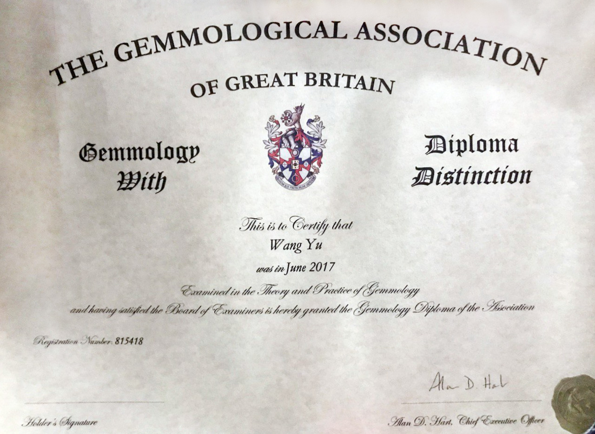

Hi, my name is Yu Wang. I am currently a Ph.D. student at Visualization and Graphics Group, Utrecht University, under the supervision of Prof. Alexandru Telea. My research interests include high-dimensional data visualization and generative AI. More recently, I have been focusing on neural approaches for inverse projection and decision maps for classifiers.
Fun fact: I am an FGA-certified gemologist  with expertise in gemstone identification.